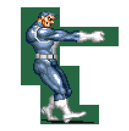
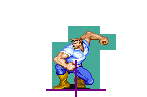
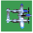
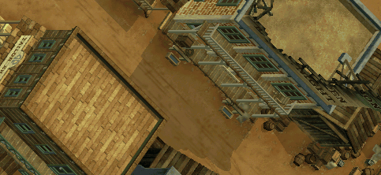
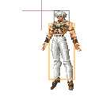
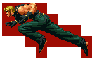
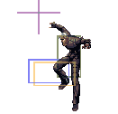
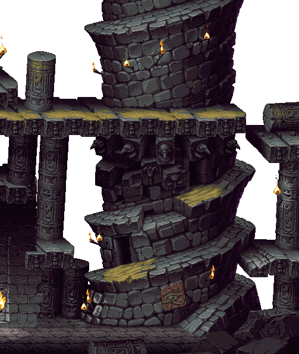

Arcade Sprite Viewer
An arcade game sprite / map viewer (cps1 neogeo ...)
click here to view source code & readme.
CPS


PSIKYOSH


NEOGEO




- Click here to view kof97.
Usage
- m key = change mode from 1 - 6 loop
- ctrl + arrow keys = change palette set to level/scene
- mode 1 (tiles)
- arrow keys/page up/down = move tiles
- \[ / \] change tile set
- , / . change palette
- mode 2 (sprites)
- arrow up/down = change set of sprites
- arrow left/right = change sprite
- mode 3/4 (background layer)
- arrow up/down = change level
- arrow left/right = change scene of level
- , / . = move map left/right
- c show collision box (if found)
- mode 5 (player animation) unfinished
- mode 6 (animation) if any
- arrow up/down = change set of animations
- arrow left/right = change animation
TODO
- webgl & wasm?
- how to know which pen/color of background layer is in front of sprites?
Reference
Thanks to
- Project mamedev
- Phil Bennett